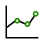

Online Clover merchant
Offline Clover merchant
11:28
Fri Jun 12
100%
gemini.google.com
Gemini
Hi Sam
What’s on your mind?
Ask Gemini
Tools
Fast
Write
Plan
Research
Learn
11:28
Fri Jun 12
100%
Home
Blooming Affairs Florist
Mon, 24 September
9:57 AM
view today’s sales

Sales Overview
Item sales report
Items list
Closeout
Appointments
Jack’s Barber Shop
Day
Sat, Jul 10, 2026
1 of 1
AF
Anders Fjord
AB
Ashley Barnes
CL
Coretta Lundgren
11:00 AM
12:00 PM
1:00 PM
2:00 PM
3:00 PM
4:00 PM
5:00 PM
6:00 PM
Maya Patel
Color
12:45 – 1:45 PM
AF
Sam Lufton
Haircut
2:00 – 2:45 PM
AF
Diego Romero
Buzzcut
4:00 – 4:45 PM
AF
Ben Kim
Beard trim
AF
Rachel Chen
Haircut
11:30 AM – 12:30 PM
AB
Liam O’Brien
Hot towel shave
AB
Priya Shah
Fade
2:00 – 2:45 PM
AB
Jordan Wells
Haircut
4:00 – 4:45 PM
AB
Marcus Hayes
Beard trim
11:00 – 11:45 AM
CL
Elena Vargas
Clean shave
12:30 – 1:15 PM
CL
Tomás Reyes
Wash & style
2:00 – 2:45 PM
CL
Aisha Khan
Haircut
4:00 – 4:45 PM
CL
Orders
Blooming Affairs Florist
Search orders
Placed at
Status
Total / Tender
Order type
Customer / Employee
ID / Notes
11:46 AM
7/10/26
Paid
$82.00
— —
Gemini
Sam Lufton
Micheal
1 item
Summer Fields B…
11:12 AM
7/10/26
Open
$54.50
— —
Phone
Andrea Mitchell
Micheal
1 item
Garden Roses Bo…
10:53 AM
7/10/26
Paid
$643.50
— —
Phone
Tamara Williams
Micheal
10 items
Small Event Pack…
10:35 AM
7/10/26
Partially Paid
$192.35
— —
Walk-In
Daniel Sutter
Micheal
3 items
Custom Floral Arr…
10:04 AM
7/10/26
Open
$82.21
— —
Phone
Arturo Diaz
Ricky
1 item
Summer Fields B…
9:31 AM
7/10/26
Paid
$125.50
Multiple
Walk-In
— —
Ricky
2 items
Sunflower Large …